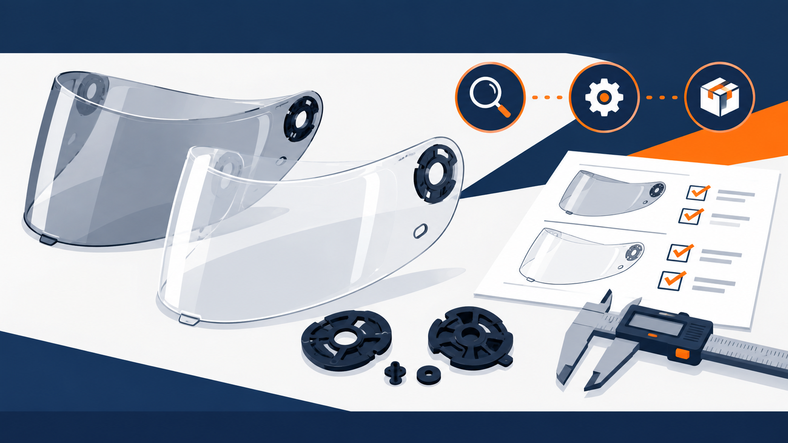

A replacement visor is easy to describe loosely and expensive to correct after shipment. A buyer may receive a clear shield in the expected colour and packaging, yet still find that it cannot be fitted, does not close correctly, or is not supported by the evidence required for the intended market.
The practical issue is not a generic “visor margin.” It is whether the quotation, sample and production lot all refer to the same configuration. This checklist is designed for importers, distributors and private-label teams buying replacement motorcycle helmet visors from China. It does not establish product compliance or suitability for any particular rider or market.
1. Treat the visor as a configuration, not a generic accessory
Do not use a brand name, a catalogue photo or a broad description such as “full-face visor” as the complete specification. Start a compatibility record that a supplier, inspector and receiving team can all read in the same way.
- The helmet brand, commercial model name and any known version or production period
- The visor part number, mould or supplier variant name, if available
- Clear photos of both side mechanisms, the pivot area and the visor in its closed position
- The required finish and any separate functional request, described without implying an unverified performance claim
- The destination market, intended use and any marking, warning or document the buyer needs to review
If one of these fields is unknown, label it as unknown in the inquiry. Do not replace missing information with an assumption that two similarly named items fit the same helmet.
2. Separate fit, appearance and regulatory evidence
These are three different questions. A visor may appear to match a sample helmet but require a different attachment arrangement. A requested colour or coating may be commercially acceptable while still needing its own agreed appearance standard. Regulatory evidence, where applicable, needs to be reviewed against the exact product and market—not inferred from a general “ECE” or “DOT” phrase in a listing.
For markets applying UN Regulation No. 22, the regulation addresses protective helmets and their visors, including approval information for defined helmet and visor types. Ask the supplier or approval holder for the current records relevant to the quoted configuration, then compare the stated helmet type, visor type and markings with the sample and intended market. The official UNECE regulation pages are a useful starting point, but they do not replace advice from the relevant authority or a qualified specialist.
3. Build a quotation that can be compared line by line
Ask every supplier to quote against the same written record. A useful quote separates the item itself from the services around it, rather than hiding differences behind a single unit description.
- Visor configuration, attachment arrangement and approved reference photos or drawings
- Finish, colour reference and what is included or excluded from the visual standard
- Individual protection, inner packing, outer carton and label information
- Sample status, retained reference, inspection points and acceptance criteria
- Artwork, marks or packaging supplied by the buyer, and confirmation that their use is authorized
- Document scope, document date and the legal entity responsible for each document
Do not compare a price until the specification, included components, packing and evidence request are aligned. If a supplier changes a mould, attachment component, finish, label or factory, record a new revision and recheck the affected points.
4. Use the sample to test fit and change control
A pre-production sample can help a buyer verify the submitted configuration. It cannot prove the performance of a production batch or establish compliance with an applicable safety requirement. Keep that distinction in the purchase file.
- Retain the reference helmet and visor or a dated, traceable record of the exact items used for the fit check.
- Check the attachment points, opening and closing movement, locked position, clearance and visible contact points against the agreed record.
- Photograph the check and identify the sample revision, date and persons present.
- Record any deviation as an open point; do not call it compatible until it is resolved against the agreed configuration.
- Require written notice before any post-sample change to the configuration, material, component, finish, label or packing.
Where a buyer cannot supply a matching helmet for the fit check, the resulting limitation should be written plainly in the quotation and inspection plan. A supplier photo alone is not the same as a buyer-controlled fit verification.
5. Check the production lot against the same record
Before shipment, compare selected units and packing against the approved sample, revision record and inspection points. Focus on traceability and disclosed changes, rather than treating a visual inspection as a regulatory test.
- Does the sampled item match the agreed attachment arrangement and reference photos?
- Are the finish, labels and packaging consistent with the approved written scope?
- Are any markings, warnings or documents present only where they have been agreed and reviewed for the intended market?
- Has the supplier reported any change that could affect fit, appearance, documentation or packing?
Use the inspection result as dated evidence of what was observed in the agreed sample. It is not a type approval, laboratory report or guarantee of future product performance.
6. Keep brand, image and buyer information under control
Replacement parts often involve buyer-supplied images, names, packaging artwork or confidential fit information. Confirm in writing that any mark, artwork or reference material supplied for production may lawfully be used. Limit early-stage sharing to the information necessary for an accurate quote, and redact customer names, bank details, unreleased drawings and other sensitive information until the commercial relationship and scope are clear.
A better first inquiry
For a useful first review, send the helmet model information you can disclose, photos of the attachment area, the desired visor configuration, destination market, anticipated purchase decision and any current document request. Taotao Sourcing can help organize the record, compare supplier responses and define a proportionate sample or factory-side check under a written scope. We do not issue product certification, type approval, legal opinions or performance guarantees.
Related pages
- Motorcycle Helmet Visors & Spoilers
- How to Screen a Chinese Motorcycle Helmet Supplier Before You Pay a Deposit
- How to Compare Chinese Supplier Quotes Beyond the Lowest Price
- Supplier Verification, Factory Audit, Product Inspection or Lab Test: Which Check Does Your China Order Need?
Official references
- UNECE — UN Regulation No. 22: current regulation and amendment pages for protective helmets and visors
- UNECE — UN Regulation No. 22, 06 series document page
- NHTSA — motorcycle helmet safety guidance for the United States